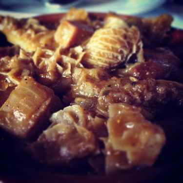

Ulusu Lwenkomo (Stewed Ox Tripe)
One of my favourite foods is tripe. Below is a recipe for preparing African style tripe.
Ingredients:
- 1 kg cleaned beef tripe(Ulusu)
- 1 kg intestines (amathumbu)
- 1 tablespoon salt
- Ground black pepper
Method:
- Rinse and ensure the tripe is clean and cut it up into pieces.
- Place all the ingredients into a pot and add water until the tripe is completely covered.
- Bring the mixture to a boil and then reduce the heat and allow the pot to simmer for about 3 hours.
- Season with salt towards the end of the cooking process